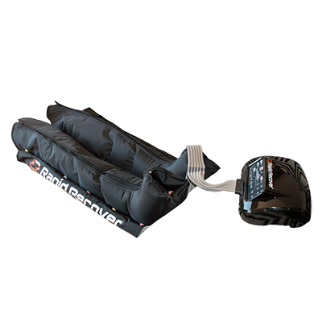
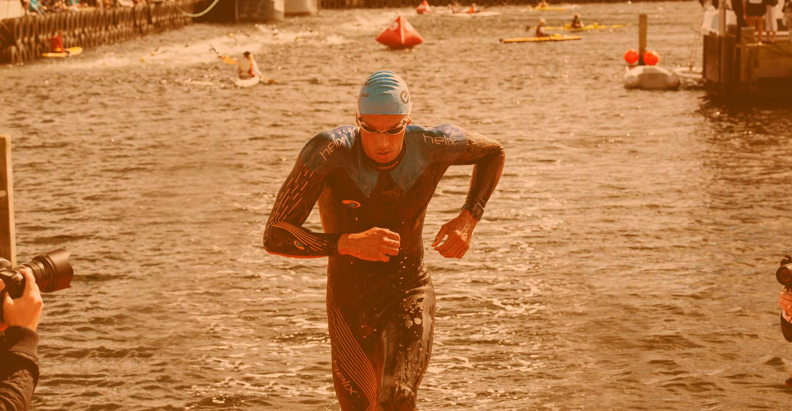
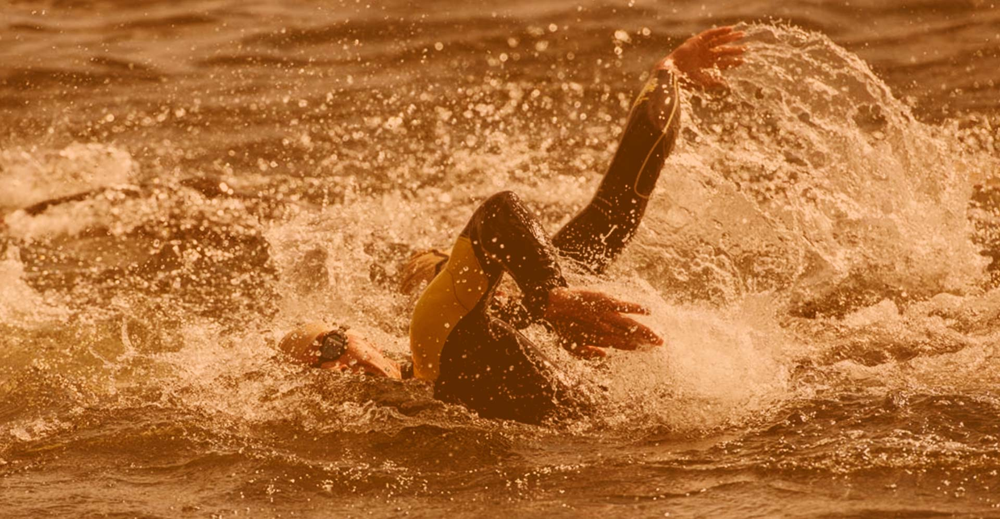
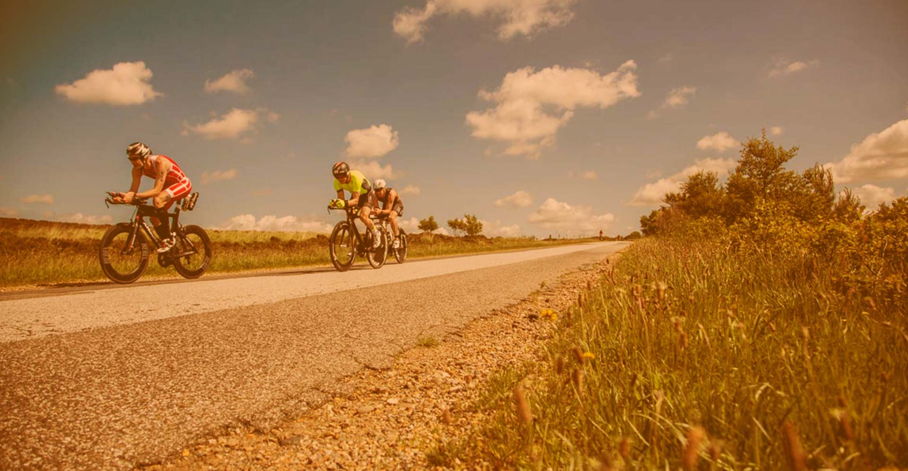

RAPID RECOVER PRODUKTER

Rapid Recover 6Cmore_vert
Rapid Recover 6Cclose
Rapid Recover 6C er Rapid Recovers high-end recovery legs. Lavet med 6 kamre og 6 forskellige programmer, så du kan tilpasse behandlingen til dine behov.
Hurtige fakta:
- 6 kamre
- 6 programmer
- 3 behandlingsformer:
- Massage
- Lymreødem drænage
- Restitution
- Nem betjening
- OverLap ben medfølger (110 cm)
Rapid Recover Travelmore_vert
Rapid Recover Travelclose
Rapid Recover Travel giver dig samme behandlingsmuligheder som Rapid Recover 6C, men i en lille og smart pakke, der er nem at have med på farten.
Fakta:
- Lille og bekvem
- Kan tages med på farten
- To kamre
- 6 programmer
- 3 behandlingsformer
- Massage
- Lymreødem drænage
- Restitution
Hvordan fungerer Rapid Recover?

Om lymfesystemet
Rapid Recover virker ved at påvirke lymfesystemet, der findes i hele kroppen. Kroppen består af mange forskellige organer og af mange forskellige typer væv, som alle indeholder forgrenede kar, der er kædet sammen i et stort netværk, der bliver kaldt lymfesystemet. Organer såsom milt, brissel, mandler, blindtarm og pyerske plaques (væv ved tyndtarmen), har alle en rolle i dette system. Lymfesystemets rolle er at filtrere kroppens lymfe gennem de 500-1000 lymfekirtler som vi har i kroppen. Behandlingen af lymfe er essentiel for immunforsvaret, fordi hvide blodlegemer (lymfocytter), der er vigtige i kampen mod virus og bakterier, bliver modnet i lymfekirtlerne.Hver dag bliver mellem 2 og 3 liter lymfe samlet op af lymfesystemet og transporeteret til halsvenen, hvor lymfen kommer tilbage i blodbanerne. Lymfesystemet har ikke nogen selvstændig pumpe i kroppen, men bevæger sig ved hjælp af passiv tilbageførsel, fra de yderste dele i kroppen, til venerne omkring kravebenet. Denne tilbageførsel sker derfor, når du bevæger din krop, og dine muskler arbejder, og gennem lymfekarrenes motorik og bevægelse i mellemgulvet, hver gang du trækker vejret. Derfor har det stor betydning for lymfesystemet, at du trækker vejret med musklerne i mellemgulvet.
Fordi lymfetransporten sker ved passiv tilbageførsel og ved, at dine muskler arbejder, har kulde og varme stor betydning for lymfetransporten. Kulde nedsætter således transporten, mens varme modsat øger lymfetransporten. Den optimale kropstemperatur for den ideelle lymfetransport er således 37 grader.
Fordi lymfocytterne bliver udviklet, og modnet, i lymfekirtlerne, vokser lymfekirtlerne når du er ramt af sygdom, og din krop skal bekæmpe virus og bakterier. Dette skyldes, at kirtlerne skal arbejde mere for at udvikle lymfocytterne, der skal bruges i denne kamp. Det er samtidig lymfekirtlerne, der bruges til at skelne mellem "goder" og "onder" i kroppen. Denne skelnen er vigtig for at undgå, at kroppen angriber sig selv med allergi eller autoimmune sygdomme til følge.
Medicinske fordele
- Hurtig fjernelse af inflammatorisk væske
- Behandling af dårlig blodcirkulation og dermed forbundne sygdomme
- Lymfeknudeafledning

Træningsfordele
- Hurtigere bedring efter motion
- Hurtigere fjernelse af mælkesyre

Livstil
- Cellulitbehandling og forebyggelse
- Fremmer vækst i celler og organer

Skader
- Reducere hævelse
- Fremskynder helbredelsestiden
- Forhindrer muskelatrofi
Sådan påvirker Rapid Recover lymfesystemet
Rapid Recover recovery boots er udviklet efter samme princip som den medicinske luftkompression eller vacumterapi som hospitalerne bruger (maskinerne er dog IKKE klacificeret som medicinsk udstyr). Rapid Recover recovery boots virker således efter samme princip ved at behandle lymfeødem og væskeophobninger. Dette sker ved, at maskinen pumper luft ned i benene, der således virker som kompression på dine ben. Derved øges blodgennemstrømningen i muskulaturen og lymfen bliver stimuleret, så den kan bevæge sig frit. Dette medvirker til en hurtigere restitution, da det er essentielt for restitutionen, at lymfen kan bevæge sig frit. Derved virker Rapid Recover ved at øge blodgennemstrømningen og lymfedrænagen, hvilket medvirker til friskere muskler.Således kan drænage af lymferne hjælpe med:
- Forebygning/bekæmpning af ødemer/Væskeophobninger
- Optimering af blodcirkulation
- Renere hud ved at affaldsstoffer renses ud
- Forebyggelse af vævsforfald/alderdomsforandringer i huden
- Fjerne ophobede affaldsstoffer, D-tox
- Operationer, før og efter
- Bihule- og pandehule lidelser
- Forebyggelse/behandling af hovedpine
- Små sprængte blodkar
- Gigtlidelser
- Bekæmpelse af generelle inflammationstilstande
- Frossen skulder, musearm, karpaltunnel syndrom mv.
- Væskeophobning ved menstruation
- Overgangsbesvær/hedeture
- Behandling efter større vægttab
- Følgevirkning af diabetes
- Skinnebenssår
- Styrke immunforsvaret
- Bekæmpe/behandle tilbagevendende infektioner
- Uro/smerter i benene
Forhandlere

Atleter sponsoreret af Rapid Recover


Ønsker du at blive forhandler?

Sonne-Schmidt Trading ApS | Cvr.: 34580707 | Enggårdvej 21, 7400 Herning | Tlf. 31614759 | sales@rapidrecover.dk